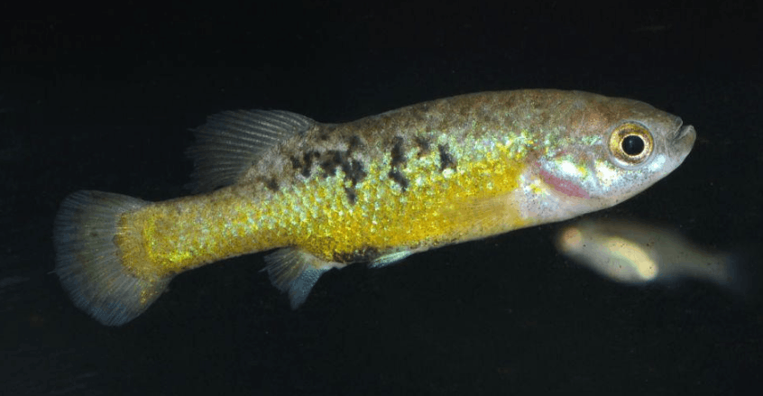

Systématique
- Ordre : Cyprinodontiformes
- Famille : Goodeidae
- Genre : Allotoca
- Espèce : A. dugesii
- Auteur : Bean, 1887

Allotoca dugesii est un poisson Goodeidé endémique du Mexique. Il appartient à la sous-famille des Goodeinae, caractérisée par une viviparité complexe. C'est l'espèce type du genre Allotoca. Morphologiquement, il présente un corps relativement allongé et comprimé latéralement. Sa coloration est généralement gris-argenté avec une bande latérale sombre plus ou moins marquée selon les populations et l'état de stress. Des reflets irisés peuvent apparaître sur les flancs.
La taille maximale observée est d'environ 6 à 7 cm pour les femelles, les mâles restant légèrement plus petits (environ 5 cm). Contrairement à d'autres goodeids plus robustes, le genre Allotoca est réputé pour sa sensibilité accrue aux variations de qualité d'eau et sa morphologie plus gracile.
Cette espèce présente un comportement grégaire en milieu naturel mais peut se montrer territoriale en aquarium, surtout entre mâles. Ce n'est pas un poisson particulièrement agressif envers les autres espèces, mais sa maintenance en bac spécifique est recommandée en raison de ses exigences environnementales et de sa rareté.
Il occupe principalement les zones calmes des rivières, les lacs et les étangs de haute altitude. C'est un nageur actif qui nécessite un espace libre important. Sensible aux températures élevées, il préfère les eaux fraîches et bien oxygénées, typiques des plateaux mexicains. Une filtration efficace mais sans créer un courant excessif est préférable pour simuler ses habitats stagnants ou à faible débit.
Mode : Vivipare (matrotrophie via trophotaeniae).
Comme tous les membres de sa sous-famille, la fécondation est interne. Le mâle utilise un andropode (nageoire anale modifiée) pour transférer le sperme. La gestation dure environ 55 à 60 jours selon la température. Les embryons sont nourris par la mère via des structures filamenteuses appelées trophotaeniae, qui agissent comme un placenta primitif.
Une portée compte généralement entre 10 et 30 alevins, qui naissent assez grands (environ 10–15 mm). Les parents ne pratiquent pas de soins préventifs et peuvent prérater les nouveau-nés si l'espace ou la végétation (mousses, plantes denses) sont insuffisants. L'élevage des jeunes est relativement aisé avec une nourriture fine adaptée dès la naissance.
Dimorphisme sexuel : Le mâle possède un andropode (les premiers rayons de la nageoire anale sont courts et séparés du reste de la nageoire par une petite encoche). Il est plus petit et souvent plus svelte que la femelle. La femelle est plus ronde, particulièrement lors de la gestation, et sa nageoire anale est de forme normale.
Espérance de vie : Environ 3 à 5 ans en captivité si les conditions de température (fraîcheur hivernale notamment) sont respectées.
On trouve Allotoca dugesii dans les bassins des fleuves Lerma et Santiago, ainsi que dans les lacs de la région de Cuitzeo et de Pátzcuaro au Mexique. Ces milieux se situent souvent à plus de 1500 mètres d'altitude. L'eau y est généralement neutre à alcaline, avec une dureté modérée.
Les habitats naturels subissent une forte pression anthropique (pollution, assèchement, espèces invasives comme Tilapia ou Micropterus salmoides), ce qui rend l'espèce vulnérable. Le substrat est souvent composé de limon, de sable et de débris organiques. La végétation aquatique peut être dense par endroits (Potamogeton, Nymphaea).
Répartition

Origine naturelle :
- Mexique : Bassin du Rio Lerma, Rio Santiago, Lacs Pátzcuaro, Cuitzeo et Zirahuen (États de Michoacán, Jalisco et Guanajuato).
- Localité type : Guanajuato, Mexique.
Espèce classée "En danger" (Endangered) sur la liste rouge de l'UICN. Les populations sont en déclin constant dans la nature. Sa préservation repose largement sur les programmes d'élevage conservatoires (Goodeid Working Group).
Paramètres de maintenance
Température : 15 à 22 °C (Une période de repos hivernal à 15-18 °C est essentielle pour la santé à long terme). Éviter de dépasser 25 °C.
pH : 7,0 à 8,0 (légèrement basique).
GH : 8 à 20 °dGH (eau moyennement dure à dure).
Courant : Faible à modéré.
Volume conseillé : Minimum 80 L pour un petit groupe. Bac bien planté avec des zones de nage dégagées.
Régime alimentaire
Régime : Omnivore à tendance insectivore et carnivore.
En milieu naturel, il consomme des petits invertébrés, des larves d'insectes et une part de matière végétale/algale.
En aquarium, il accepte les aliments secs de qualité, mais nécessite des apports réguliers de nourriture vivante ou congelée (cyclops, daphnies, artémias). Un apport végétal (spiruline) est bénéfique.